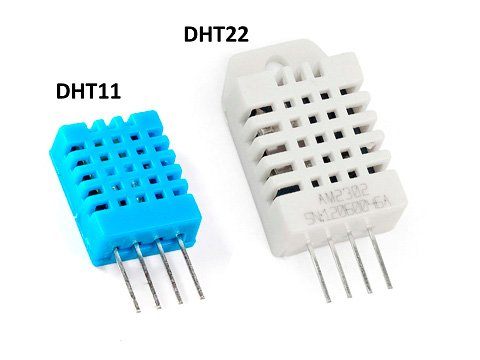

DHT22 — Capteur Température/Humidité¶
 Composant XXX
Présentation¶
Le capteur de température et d'humidité DHT22 (ou AM2302) communique avec un microcontrôleur via un port série. Le capteur est calibré et ne nécessite pas de composants supplémentaires pour pouvoir être utilisé. - Alimentation: 3,3 à 6 Vcc - Consommation maxi: 1,5 mA - Consommation au repos: 50 µA - Plage de mesure: - température: -40 à +80 °C - humidité: 0 à 100 % RH - Précision: - température: ± 0,5 °C - humidité: ± 2 % RH - Dimensions: 25 x 15 x 9 mm
Le capteur DHT11 fonctionne sur le même principe mais est moins précis, et moins cher !
Tutoriels¶
Exemples C (PlatformIO)¶
- example minimal :
code/example_minimal
Références¶
- Présentation des sondes DHT
- Librairie et exemple de programme
- Fiche technique DHT22¶
- Datasheet :
- Bibliothèques :
- Tutoriels externes : Documentation Gotronic